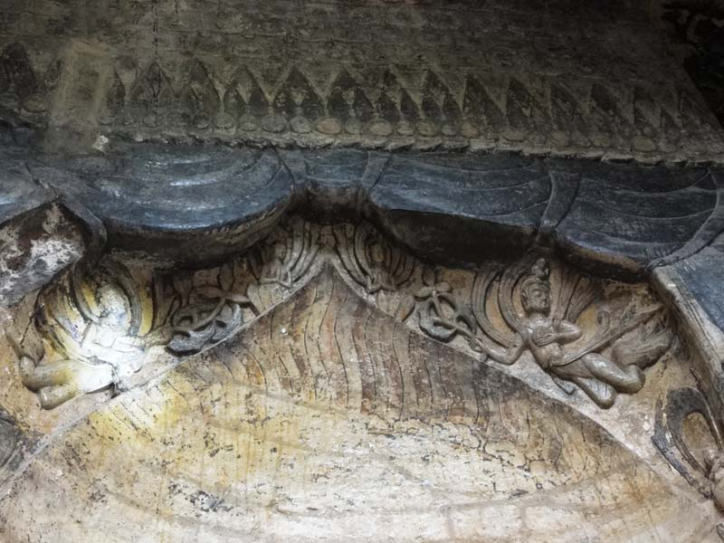

第一石窟为正方形，高、阔各6米。门内两侧雕有“帝后礼佛图”，余三壁雕佛像和佛传故事。于壁角雕神王、怪兽、乐伎等。左侧三幅是皇帝礼佛图，右侧三幅是皇后礼佛图。帝后礼佛图分为三层六组，每层由比丘和比丘尼作前导，帝后、侍从，前呼后拥，反映皇室之宗教信仰。帝、后身后跟着文武大臣和成群的嫔妃，帝后皆有侍女搀扶，前有僧人导引。礼佛图构图协调，刀法熟练，造型逼真，充分表现了工匠巧夺天工的艺术技巧。正中有一根方柱，四面雕有佛龛。龛内各雕有一佛、二弟子、二菩萨。佛座下面最小，两侧有一对石狮子，蹲伏披毛，形象逼真。佛像的背光刻有火焰纹，两侧有对称的飞天、化生和莲花。弹琵琶、横吹笛的会乐飞天，生动活泼，栩栩如生，构成以佛为主的对称协调的成组石雕。方柱的基座每面都雕有力士，力士下面雕有姿态各异的神王。方柱上端每面都有化生、莲花和垂鳞纹、彩铃、飘带组成的垂幔，刻工精细，美丽而庄重。此等雕像多已破损，且经后世加塑补彩，大抵失去本来面目，然其构图简练生动，是我国现存浮雕中较为完整者。
